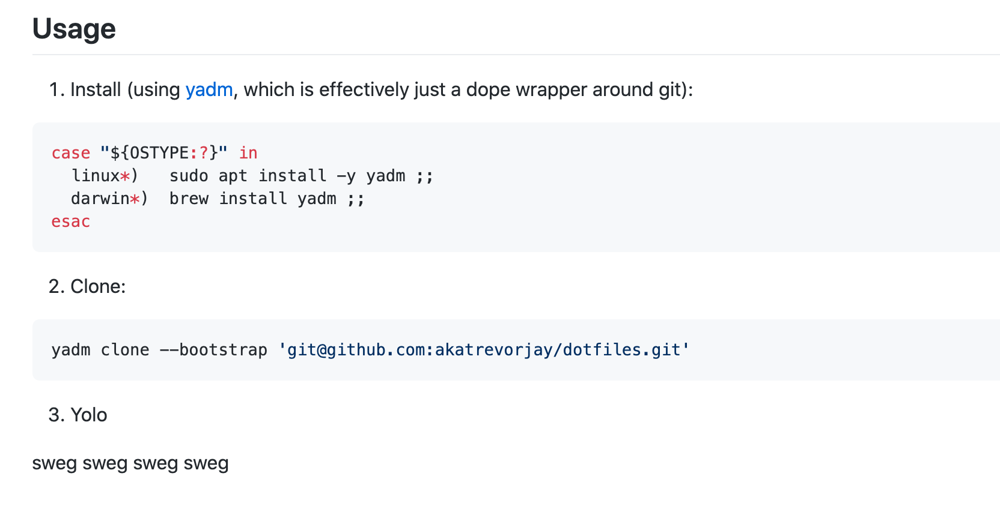

开始，开始，开始使用吧！
1. 功能简介
User-specific app config is stored in so called dotfiles
您开始尝试对配置进行新的更改，现在一切都被破坏了。yadm 可以帮助你决定什么改变了，或者简单地恢复你所有的改变。
- Yadm 可以恢复你的配置
您已经花费了时间调整您的计算环境。一切都按照你想要的方式运作。太棒了！然后你的硬盘出了故障，电脑需要重建。
- Yadm 可以帮你协调机器之间的配置
你得到了一台新电脑，你想要重新创建那个环境。您可能希望两台机器的配置保持同步。
2. 工作方式
Yet Another Dotfiles Manager
yadm 就像有一个版本的 Git，它只在你的 dotfiles 上运行。如果你知道如何使用 Git 工具的话，你已经知道如何使用 yadm 了。
- 如果您的工作目录是另一个
Git管理的存储库，这并不重要。 - 不必移动
dotfiles或者将它们从另一个位置符号链接起来。 Yadm自动继承了Git的所有特性，允许你分支、合并、重建、使用子模块等。
实际上 yadm 底层依旧是使用 Git 来做管理的，即 yadm 在管理 dotfiles 的时候，实际上是用 Git 来进行版本控制、远程同步等操作的。但是，yadm 在 Git 工具功能的基础之上，进行了合理的功能拓展。
- 使用单一存储库
- 几乎没有任何依赖
- 能够使用基于操作系统或主机的备用文件
- 能够加密和跟踪机密文件
3. 安装方式
安装方式原来很简单
- OSX
$ brew install yadm- Ubuntu/Debian
$ apt-get install -y yadm- Download
$ curl -fLo /usr/local/bin/yadm https://github.com/TheLocehiliosan/yadm/raw/master/yadm
$ chmod a+x /usr/local/bin/yadm4. 快速开始
只需要简单几个步骤，
- [1] 创建一个新的远程仓库
在 Github 上面创建一个空的仓库，推荐使用私有仓库，况且现在私有仓库已经免费开放了。不然，一旦将私有的内容同步上去的话，那就非常尴尬且危险了。之后，再我们的家目录(~/)下面进行初始化并添加到仓库里面进行管理。
# 初始化yadm仓库
$ yadm init
# 使用yadm添加文件或目录
$ yadm add <file/dir>
$ yadm commit -m "info"
# 推送到远程仓库
$ yadm remote add origin <github url>
$ yadm push -u origin master- [2] 已经有了远程存储库
# 直接使用
$ yadm clone <github url>
$ yadm status从此开始，我们就可以使用 yadm 来专属管理我们分散在系统中各个地方的配置文件或者重要目录了，即专属的 Dotfiles 管家。
# 查看使用yadm管理的Dotfiles列表
$ yadm list | head -2
.tmux.conf
.zshrc
# 查看每个Dotfiles文件的修改情况
$ yadm status
On branch master
Your branch is up to date with 'origin/master'
nothing to commit (use -u to show untracked files)5. 命令使用
先来掌握下 yadm 命令的使用吧！
| 编号 | Yadm 命令参数 | 参数对应含义解释 |
|---|---|---|
| 1 | yadm status |
查看状态 |
| 2 | yadm fetch |
远程获取 |
| 3 | yadm push |
推送配置 |
| 4 | yadm diff |
对比差异 |
| 5 | yadm diff --cached |
对比差异 |
| 6 | yadm list |
管理列表 |
| 7 | yadm list -a |
管理列表 |
| 8 | yadm clone |
克隆项目 |
| 9 | yadm clone --bootstrap |
克隆项目 |
| 10 | yadm checkout |
状态迁出 |
| 11 | yadm checkout -b |
状态迁出 |
| 12 | yadm encrypt |
文件解密 |
| 13 | yadm decrypt |
文件解密 |
| 14 | yadm decrypt -l |
文件加密 |
| 15 | yadm commit --amend |
用新的提交替换上次提交 |
| 16 | yadm alt |
创建符号链接 |
| 17 | yadm remote -v |
查看远程仓库地址 |
6. 自动配置
使用 Yadm 来自动配置环境
咳咳咳，我们使用
yadm工具不光光是可以管理我们的Dotfiles文件或者目录，而且还可以使用它的bootstrap功能来完成初始化电脑时许多工具的安装。使用
bootstrap功能可以自动将任务脚本的执行hook在yadm克隆之后，来完成环境的全自动部署。这里不论是Bash脚本、Python脚本还是什么别的，只要是可执行文件就可以。
# 默认位置
$HOME/.config/yadm/bootstrap/- 创建和准备好下述脚本之后，我们就可以执行
yadm bootstrap命令来手动执行检测一下了。当然，我们编写的bootstrap文件也是可以使用yadm工具来进行管理的。
#!/bin/sh
system_type=$(uname -s)
is_command() {
command -v "$1" > /dev/null 2>&1
}
if [ ${system_type} = "Darwin" ]; then
if ! is_command zsh; then
echo "Installing zsh..."
brew install zsh
if [ $? -eq 0 ]; then
echo "All packages are installed."
else
echo "Install zsh error."
fi
fi
fi
7. 隐私保护
使用 Yadm 来隐私保护
对敏感文件(比如
SSH密钥)进行加密、解密，提供私有仓库以外的额外一层保护，非常有用且重要。但是，这样做会将纯文本数据放入Git存储库，后者通常驻留在公共系统中。然而
yadm实现了一个特性，可以很容易地对一组文件进行加密和解密，这样加密后的版本就可以保存在Git仓库中。这个特性只有在gpg命令可用的情况下才能工作。建议您在保存机密文件时使用私有存储库，即使这些文件是加密的。
# 默认位置
$HOME/.config/yadm/encrypt
# 加密后位置
$HOME/.config/yadm/files.gpg- 要使用这个特性，必须创建一个模式列表，保存对应内容到上述的默认配置文件中即可。这样
yadm加密命令会找到所有与模式匹配的文件，并提示输入密码。一旦确认了密码，匹配的文件将被加密并保存为files.gpg文件。
$ cat $HOME/.config/yadm/encrypt
.ssh/*.key- 接下来需要做的就是和普通添加文件或目录操作一致，即使用
yadm提交到远程仓库中去。以后要解密这些文件，或者在另一个系统上运行yadm解密并提供正确的密码。默认情况下，任何解密文件都会被删除其 “group” 和 “others” 权限。
# 添加文件并提交
$ yadm add .config/yadm/encrypt
$ yadm add .config/yadm/files.gpg- 默认情况下使用的是对称加密，但使用
yadm.gpg-receiver配置可以启用非对称加密。要做到这一点，请运行如下命令即可。为此，接收者地址中必须存在gpg的秘钥才可以。
# 非对称加密
$ yadm config yadm.gpg-recipient <recipient-address>8. 配置分类
使用 Yadm 来配置分类
如果可能的话，最好在所有系统上使用相同的文件。但是，在某些场合您需要不同的文件。即针对不同的操作系统、不同的环境，需要维护不同种类的同一软件或插件的 dotfile 文件，可以使用如下两个插件来解决。
Alternate Files
- 使用上述的
Alternate Files功能时，Yadm为不同的操作系统、主机、用户会自动创建一个符号链接到适当的文件版本上，一个有效的后缀被附加到文件名，即后缀中包含使用该文件必须满足的条件。
# 格式如下
##<condition>[,<condition>,…]- 每个条件都是一个 属性/值 对，由一个句点分隔。有些条件不需要 “值”，在这种情况下，可以省略句点和值，且大多数属性可以缩写为一个单独的字母。
| Attribute | Meaning |
|---|---|
template, t |
Valid when the value matches a supported template processor. See the Templates section for more details. |
user, u |
Valid if the value matches the current user. Current user is calculated by running id ‑u ‑n. |
distro, d |
Valid if the value matches the distro. Distro is calculated by running lsb_release ‑si or inspecting /etc/os-release |
os, o |
Valid if the value matches the OS. OS is calculated by running uname ‑s. |
class, c |
Valid if the value matches the local.class configuration. Class must be manually set using yadm config local.class <class>. |
hostname, h |
Valid if the value matches the short hostname. Hostname is calculated by running hostname, and trimming off any domain. |
default |
Valid when no other alternate is valid. |
# 示例演示
$HOME/path/example.txt##default
$HOME/path/example.txt##class.Work
$HOME/path/example.txt##os.Darwin
$HOME/path/example.txt##os.Darwin,hostname.host1
$HOME/path/example.txt##os.Darwin,hostname.host2
$HOME/path/example.txt##os.Linux
$HOME/path/example.txt##os.Linux,hostname.host1
$HOME/path/example.txt##os.Linux,hostname.host2- 模板是另一个在每个主机上创建替代内容的强大工具，你应该尝试在每个系统上使用相同的文件。
# .vimrc
let OS=substitute(system('uname -s'),"\n","","")
if (OS == "Darwin")
" do something that only makes sense on a Mac
endif# . bash_profile
system_type=$(uname -s)
if [ "$system_type" = "Darwin" ]; then
eval $(gdircolors $HOME/.dir_colors)
else
eval $(dircolors -b $HOME/.dir_colors)
fiTemplates
- 模板是一种特殊的
alternate文件，模板内容和主机特定的数据结合起来作为输入到一个模板处理文件中，该文件产生一个新的文件作为其输出。如果你需要改变一个文件的一小部分，这会非常有用，但是它不支持任何类型的头文件。
# 格式如下
##template.<template processor>- 支持的模板处理器
| Processor | Suffixes | Dependencies |
|---|---|---|
| default | ##template, ##template.default |
awk must be installed. (This should be installed on all linux systems) |
| esh | ##template.esh |
esh must be installed. |
| j2cli | ##template.j2, ##template.j2cli |
j2cli must be installed. |
| envtpl | ##template.j2, ##template.envtpl |
envtpl must be installed. |
- 内置指令集
| Default (built-in) | Jinja or ESH | Description | Source |
|---|---|---|---|
yadm.class |
YADM_CLASS |
Locally defined yadm class | yadm config local.class |
yadm.distro |
YADM_DISTRO |
Distribution | lsb_release ‑si |
or /etc/os-release |
|||
yadm.hostname |
YADM_HOSTNAME |
Hostname | hostname (without domain) |
yadm.os |
YADM_OS |
Operating system | uname ‑s |
yadm.user |
YADM_USER |
Current user | id ‑u ‑n |
yadm.source |
YADM_SOURCE |
Template filename | (fully qualified path) |
- 实例演示
{% if yadm.os == "Darwin" %}
This block is included for MacOS
{% else %}
This block is included for any other OS
{% endif %}9. 扩展配合
管理 $HOME 以外的文件
在默认的情况下，
yadm工具仅仅只会管理$HOME下的文件和目录，这大部分情况下也是完全合理以及必要的。即我们家目录下面的文件，并不会管理其他的目录层级，比如/etc/等。但是，我们要想管理
$HOME以外的文件，即扩大文件树的管理范围，就要对其进行一些必要的改造。首先，需要管理的区域要有可读写的权限。然后，执行如下操作即可。
# 使用.yadm作为yadm的系统文件管理目录
$ alias sysyadm="sudo yadm -Y $HOME/.yadm"- 配置好上面的命令别名之后，就可以使用
sysyadm命令创建一个单独的远程仓库，来单独管理系统文件。即我们单独使用sysyadm命令来管理系统配置，和上面我们管理家目录的互不干扰，各司其职。
# 将/目录初始化为sysyadm的文件树
$ sysyadm init -w /
# 添加文件、签入版本控制系统、同步远程仓库
$ sysyadm add /etc/nginx/nginx.conf
$ sysyadm commit -m "add nginx config"
$ yadm push